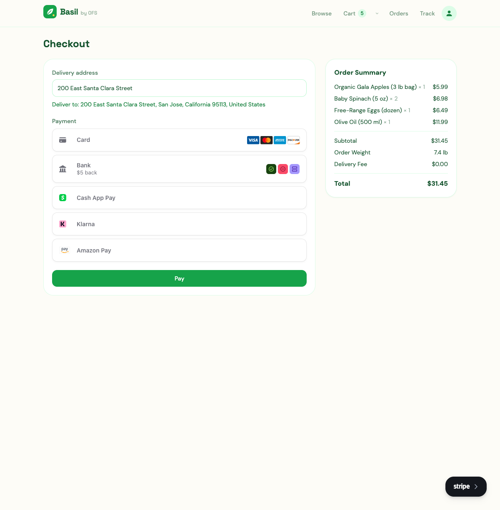
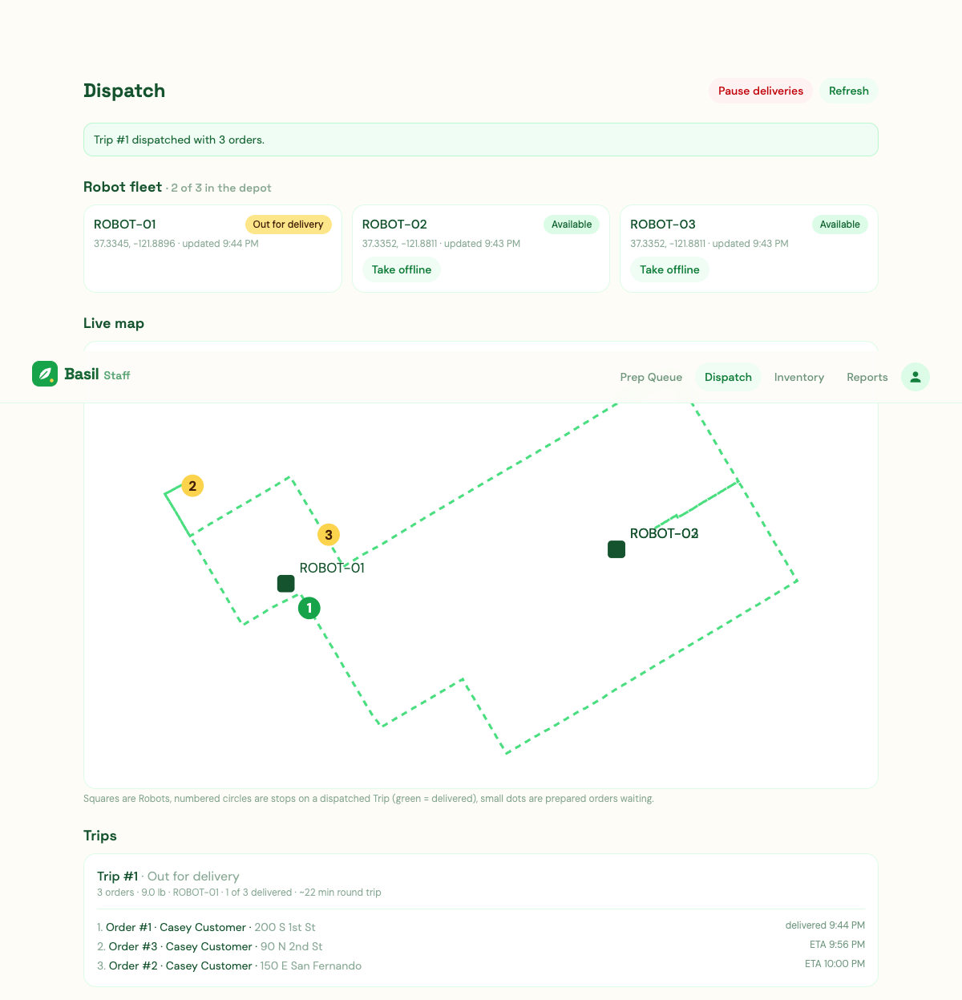
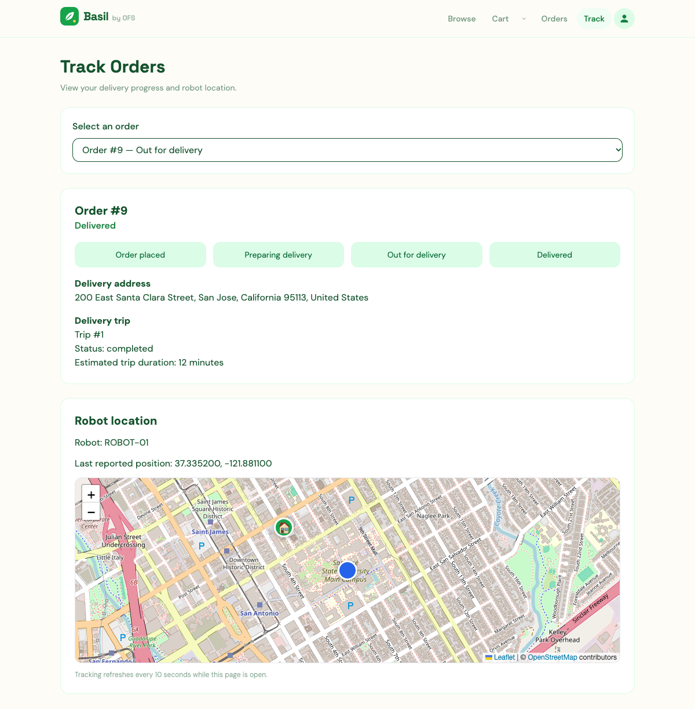

Delivery fee kicks in at 20 lb. A Trip carries at most 10 Orders or 200 lb. An Order over 200 lb goes to Manual Review instead of being dispatched. A Trip locks 30 minutes after its oldest Order was placed, so it still ships.
Idempotent payments, a zone polygon checked against geocoded addresses, and a delivery-pause switch that blocks checkout for everyone.
Flask blueprints: auth, products, cart, addresses, payments, orders, trips, tracking, reports, robots, settings.
pytest for the test suite. Alembic migrations for every schema change, checked in CI.
PostgreSQL on Supabase, 16 tables, RLS migration, integrity checks in GitHub Actions. SQLite for local dev and demos, so the demo database can be reset in seconds.
A customer storefront and a staff dashboard on a shared React/TypeScript package. Server-side pricing and weight, so the client never decides what an Order costs.
Geocoding for address → lat/lng, Search JS autofill in checkout, and the Optimization API for the Trip route and per-stop ETAs.
PaymentIntents with idempotency keys, a signed webhook that creates the Order, plus a polling fallback so a dropped webhook cannot strand a paid Order.
Emails on placed / out for delivery / delivered / failed / manual review, deduped per (Order, event, recipient) and retried three times.

4242 4242 4242 4242, any future expiry, any CVCIdempotency keys mean a double click cannot charge twice. If the webhook is late, the storefront polls and the Order is still created — a paid Order is never stranded.
We use Stripe PaymentIntents with the Elements form embedded in our own checkout, not a hosted Checkout page. It is a stricter integration: we own the UI, and we have to handle the failure paths ourselves.
4242 4242 4242 4242 — pays.
4000 0000 0000 0002 — declined.


| Metric | Definition |
|---|---|
| On-time rate | delivered stops that arrived at or before their ETA, over delivered stops that have one |
| Delivery duration | minutes from the Order being placed to the Robot arriving, averaged over those stops |
| Trip utilization | average orders per Trip, and the average fill of the Robot limits |
| Delivery success rate | Delivered ÷ (Delivered + Delivery Failed) |
Two Reports computing on-time rate differently is a classic way to lose trust in a dashboard.
So the definitions live in exactly one place — the header of reports.py —
and they are copied verbatim into Part II's Test Plan, which says in two places that the
definitions must be identical wherever they appear.
Sales and revenue, average order value, product demand, and an inventory snapshot with low-stock and out-of-stock flags.
Backend pytest suite,
in-memory database, never touches the demo data.
Schema integrity checks run on GitHub Actions against a real PostgreSQL service.
Access control on every route, junk input on every route, sign-in abuse, concurrent checkout and webhook races.
tsc and
oxlint across both frontends, as build scripts.
• Simultaneous sign-ups with one email returned 500 instead of 409.
• Names over 120 characters crashed on PostgreSQL.
• NUL bytes in a JSON body were a 500 on PostgreSQL.
• Two concurrent Manager cancels restocked the same Order.
• The Order Override route accepted a text id where it needed a number.
The demo database was missing 8 tables, so the delivery-pause settings endpoint returned 500 on every checkout page. Fixed and covered by the reset step in our run-of-show.
| Area | Tasks | Status |
|---|---|---|
| Auth, catalog, inventory | T03–T05 | done |
| Storefront & cart | T06–T09 | done |
| Payments, addresses, orders | T10–T12 | done |
| Planning, routing, robot fleet | T13–T15 | done |
| Tracking, dashboard, reports | T16, T18, T19 | done |
| Pause, override, notifications | T17, T20 | done |
All twenty tasks in the Part II backlog are implemented and merged. The remaining work for this part was proving them against real services: Stripe (done — a real test-mode payment, webhook signed and verified), Mapbox (done), and SMTP against a live Gmail account.
• Robots drive in straight lines, not along the road network.
• The customer map polls every 10 seconds rather than streaming.
• Cancelling an Order sends no customer email — the event map has no cancel case.
STATUS_EVENTS has no cancel case, so a Manager cancel
sends no email even though the backlog asked for one.docs/backlog-history.md has assigned vs built-by
for every task, including two where they differ.Black box testing. Our Part II Test Plan already describes the functional and component test areas — now we write the actual test cases against the running app.
Maintenance and bug fixing, driven by whatever Part IV turns up. The three known gaps above are our starting list.
Scrum participation, graded individually — show up and speak every stand-up — and the team retrospective.
• The trip-grouping and 30-minute dispatch rules
• The Stripe idempotency and webhook design
• The Robot state machine and its failure handling
• The stress tests and what they caught
• Straight-line Robot movement, not road routing
• 10-second polling on the customer map
• No cancellation email yet
• The customer map uses Leaflet, not Mapbox GL
docs/demo-run-of-show.md · docs/demo-cheatsheet.html · docs/part3-status.md